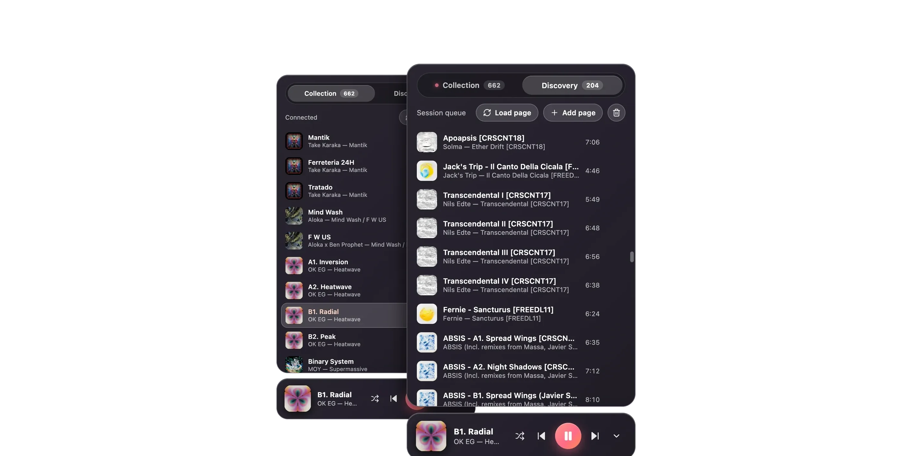
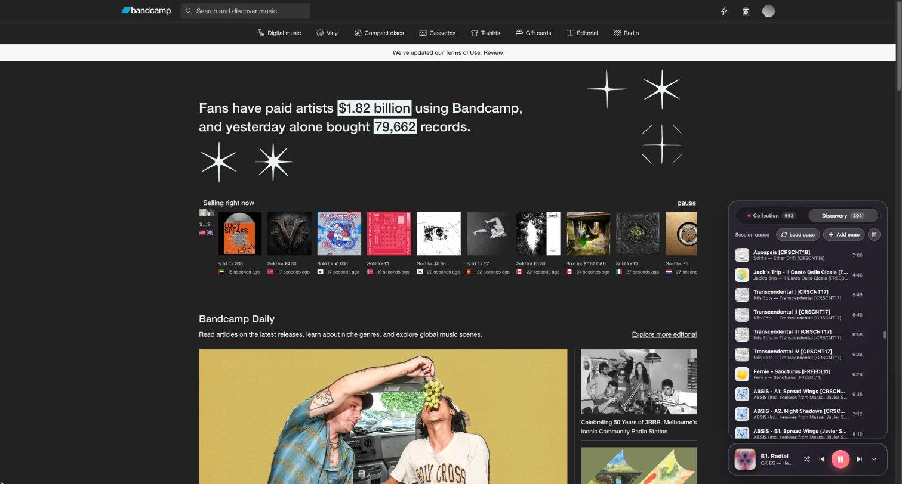
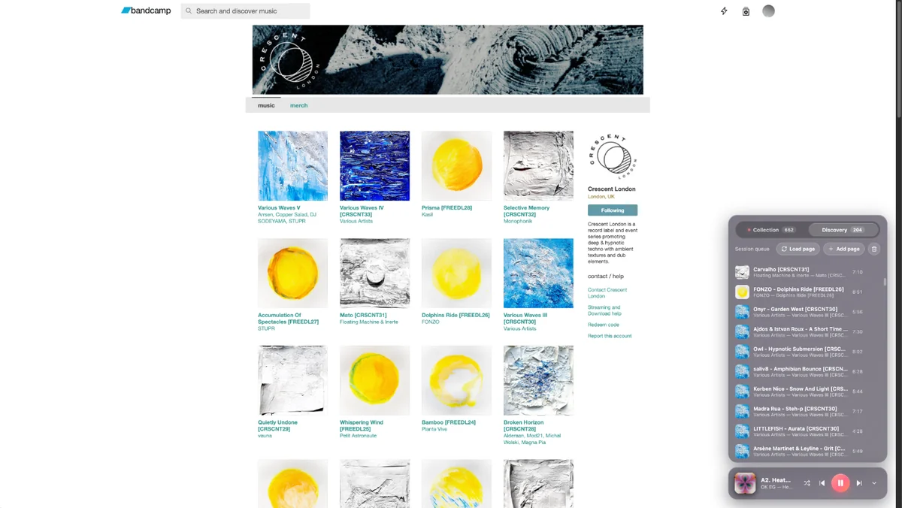
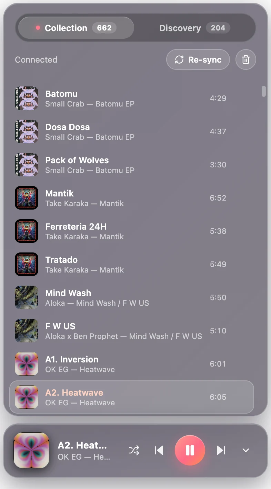

Back to work
Work/3/5/Personal project
A personal listening experience for Bandcamp.


- Type
- Personal project
- Role
- Designer & developer
- Year
- 2026
Brief
Bandcamp is where my music lives, but listening there never worked the way I like. So I wanted to see if I could build it as a Chrome extension. It makes new music easy to discover, and plays my own library at work without downloading all of it.
Skills
Built with
Figma, Claude Code, JavaScript, Chrome extension
More screens

